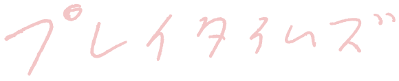
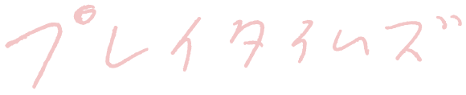
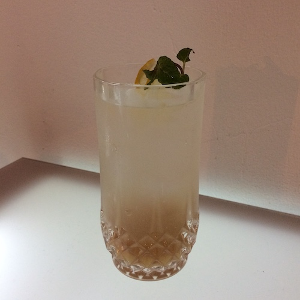
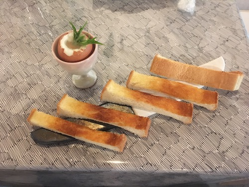
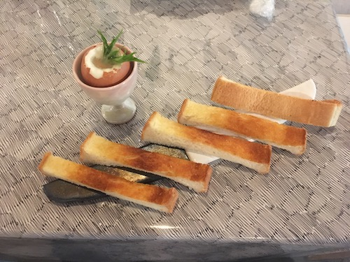
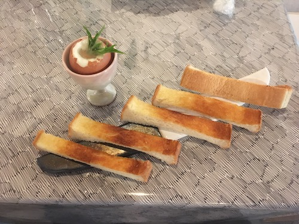

Index of 2019
We are
 Hello
Hello
 私たちの目標
私たちの目標
 TWS1
TWS1
 Menu
HF+S1
Menu
HF+S1
 MS1
MS1
ズッ友
なかよしフェアー
Best Friends from France
 NS1
NS1
 Green People
Green People
 Tongue finishes back at the root of itself
Tongue finishes back at the root of itself
 西天満のペフ
西天満のペフ
NS1
Green People
Tongue finishes back at the root of itself
西天満のペフ
Peace for Future

 

レシピ
ジンジャーシロップ
 レモンシロップ
レモンシロップ
 ホワイトソース
ホワイトソース
 ジャパメックス・タコス
ジャパメックス・タコス
 四川省風バインミーサンドウィッチ
マルセイユスタイルモーニングセット
サマーコーンスープ
四川省風バインミーサンドウィッチ
マルセイユスタイルモーニングセット
サマーコーンスープ
 白湯
白湯
レモンシロップ
ホワイトソース
ジャパメックス・タコス
四川省風バインミーサンドウィッチ
マルセイユスタイルモーニングセット
サマーコーンスープ
白湯
○○に聞きたい50のこと
かおちょに聞きたい50のこと
れんれんに聞きたい50のこと
ふなに聞きたい50のこと
ルに聞きたい50のこと
あくちゃんに聞きたい50のこと
TKに聞きたい50のこと
ぱるに聞きたい50のこと
あっちに聞きたい50のこと
おまけ
Archive of pe hu talk
食べたもの、他
manga and something
Sign
Lynx
日仏の友情
今でも大切
同感覚祭
新鑑真と上海
#magicringmakefriendship
理想の一日
遅くまで空いてるプール
etc.